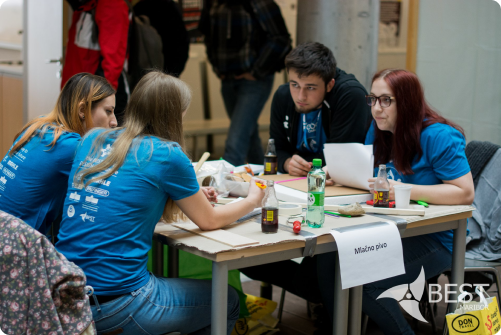

| V kategoriji skupinsko načrtovanje boš ekipa lahko dokazala svoje sposobnosti, iznajdljivost in domišljijo. Dobili boste potreben material za izvedbo in omejen čas za izdelavo “naprave”, ki jo bo zahtevala naloga. Na koncu boste pripravili kratko predstavitev svojega projekta in preizkusili delovanje svojih izdelanih “naprav”. |  |
|---|
BEST je konstantno rastoča neprofitna študentska organizacija, ki že od leta 1989 omogoča komunikacijo, povezovanje in možnost izmenjave študentov po vsej Evropi. Sestavljajo 96 lokalnih BEST skupin, v 33 različnih državah.
Več kot 3400 aktivnih članov lokalnih skupin BEST širom Evrope promovira in omogoča evropskim študentom razumeti in ceniti različne kulture, pridobiti sposobnosti in znanja za delo v mednarodnem okolju, kar še dodatno doprinese k osebnostni rasti posameznika. To skušamo doseči tako, da tekom celega leta organiziramo različne strokovne aktivnosti, kot so dvotedenski tečaji, kratki intenzivni treningi, sejmi kadrovskih potencialov in aktivnosti, kjer je večji poudarek na spoznavanju kulturnih značilnosti in navezovanju stikov med evropskimi študenti.
BEST pomaga študentom, da se mednarodno udejstvujejo, širijo znanje na svojem področju, navezujejo stike z ostalimi študenti in predavatelji. S svojim delovanjem pripomoremo k povezovanju trikotnika študent – podjetje – univerza. Aktivni člani BEST-a se udeležujejo številnih drugih internih srečanj, kot so delavnice, treningi, kulturne izmenjave in generalne skupščine, kjer si pridobimo znanja s področja timskega dela, organizacije, projektnega vodenja ter mehkih veščin.